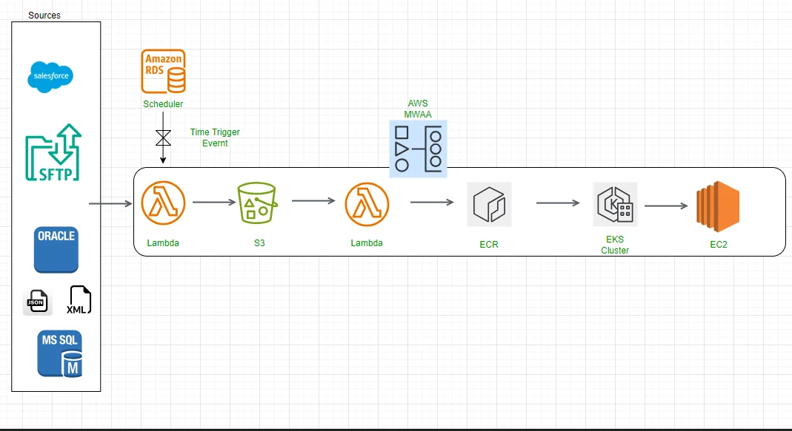

flowchart LR
A(Start VM) --> B(Pull data into VM)
B --> C(Process data)
C --> D(Dump data into destination)
D --> E(Spin down VM)
How to slash your dbt data pipeline costs with DuckDB
Introduction
- Name: Joseph Machado
- Work exp: 10 years in Data engineering & platform
- Blog: Startdataengineering
DuckDB + Ephemeral VMs = dirt cheap data processing.
Serverless workflows
- Serverless dbt + duckdb workflow: Start VM -> Pull data into VM -> Process data -> Dump data into destination -> Spin down VM.
Ephemeral servers are inexpensive
Most cloud providers allow you to rent virtual machines charged by the hour (e.g., EC2).
If you are not under tight time constraints, you can bid spot VMS at a much lower rate than on-demand VMS.
Pulling data into EC2 is cheap.
Fast data transfer speed (especially with cpp optimized duckdb extensions).
Real project cost computation
- Real data infra (ref). Details:
- Number of jobs: 800 independent data pipelines with about 80 source systems
- Number of files: ~400
- Average size per file: ~1GB
- Objective: Reducing overall costs to between $3,000 and $5,000 per month, processing about 400GB per day across 800 jobs.

Cost projection with serverless duckdb + dbt
Execution time (sample): A non-optimized, expensive pipeline (fact-fact join, joining all dimensions) takes about 2 minutes to run.
- Input: ~2GB
- RAM: 8GB Cores: 2
- Output: ~13GB
Computing the cost for 800 jobs, assuming one file (500MB) on avg per job ~ 700 USD.
Data transfer costs & IP costs are negligible at this scale.
Save time and money by keeping the feedback loop short
With standard dist. Data proc systems, you will need to wait a while (set up cluster, start job, etc.) before you see the results.
With dbt + duckdb, you can run locally without a complex setup and see results instantly (check out the buenavista package for viewing results when a dbt pipeline is running in duckdb).
Migrate one (or a few pipelines) at a time.
Your first migration will involve some work
Setting up infra to run, EC2/AWS Lambda/ECS, k8s, etc instead of connecting to a db/engine.
Code changes: Changing db-specific functions, e.g., MERGE and date functions.
Error handling: If you are processing in memory (without persisting intermediate datasets) and your data processing fails, you will have to re-run the entire pipeline.
Permissions are set at the service level, not the USER/ROLE level, as in most data processing systems.
Logging system metrics: most cloud VMs have this setup, e.g., AWS Cloudwatch.
With a template to migrate, the rest of the migration will be more straightforward
With the infra in place, the migration will be simple.
Migrate at off-peak times. For example, if you are in e-commerce, don’t migrate during Thanksgiving, or if you are in finance, don’t migrate at the end of fiscal year reporting.
- Data pipeline migrations are tricky!
Code: Ensure the code has unit/integration tests (not just DQ checks)Data: Ensure data has sufficient DQ checks and validate data between old and new systems for a defined period before switching over.
Watch out for pipelines that fully reprocess huge tables.
If you have pipelines that involve aggregating historical data (e.g., for anomaly detection, handling late-arriving events), you need to handle them. Use one of the methods below:
Aggregate past n periods of datainstead of reaggregating the entire data set. For example, if your pipeline processes sales data that comes in every day, instead of reprocessing the past n years’ worth of data, consider reprocessing the past 3/6 months of data (depending on later arriving data for your business use case).
Use
specialized data structuressuch as date lists to optimize large aggregation operations.Store aggregated datain a separate location. For example, if you count rows in a dataset every run, store the counts in a separate table so you don’t have to recompute them for historical data each time.
Watch out for integration points!
Data permissions are defined at the service level.
Most data processing systems have comprehensive data access controls crucial for data governance.
With dbt + duckdb, we must handle data access at a service (E.g., AWS Lambda can access a specific S3 bucket, etc.) level.
The inability to handle data permissions at a row level (like what Snowflake can offer) can sometimes be a deal breaker (PII, Sensitive info, etc).
Some popular tools don’t officially support DuckDB yet
elementary (GH issue)
greatexpectations
You need to do some work to dump data into Vendor warehouses
With dbt, you usually create the output dataset as well.
When using duckdb for processing, you must dump the data into a destination system (cloud store or another database).
You will need a system to create the output tables/dump to the cloud store via extensions or code.